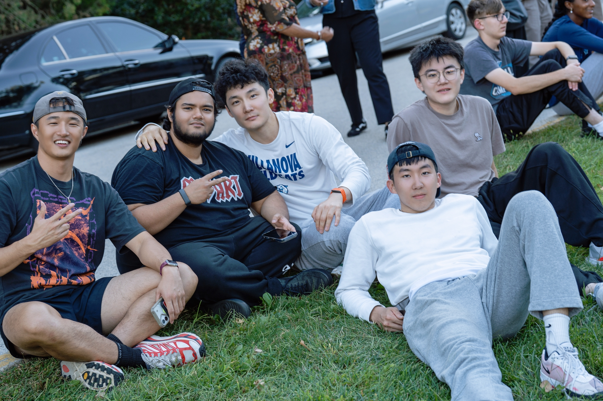
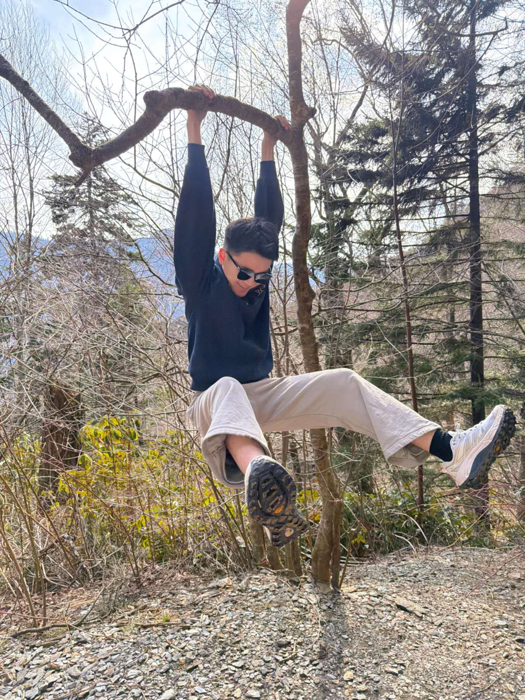

01 / TRAVEL
Somewhere new.
I like getting out of routine once in a while — new cities, long drives, random food stops, and places that look better in person than in photos.
A quieter corner of the site — places I go, things I enjoy, and a few moments worth keeping.
I like getting out of routine once in a while — new cities, long drives, random food stops, and places that look better in person than in photos.

Tennis, climbing, swimming — mostly anything that gets me moving and gives my brain something completely different to think about.



Friends, food, late nights, small wins, and ordinary days. Nothing particularly impressive — which is kind of the point.